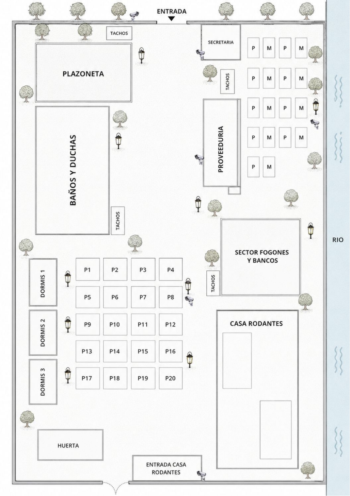
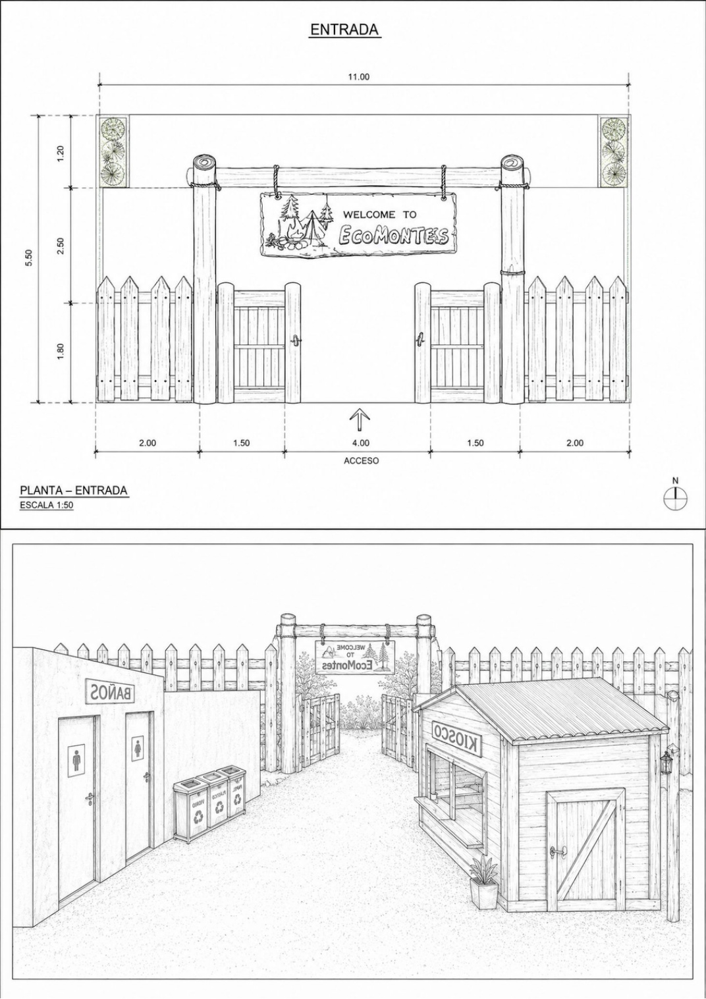
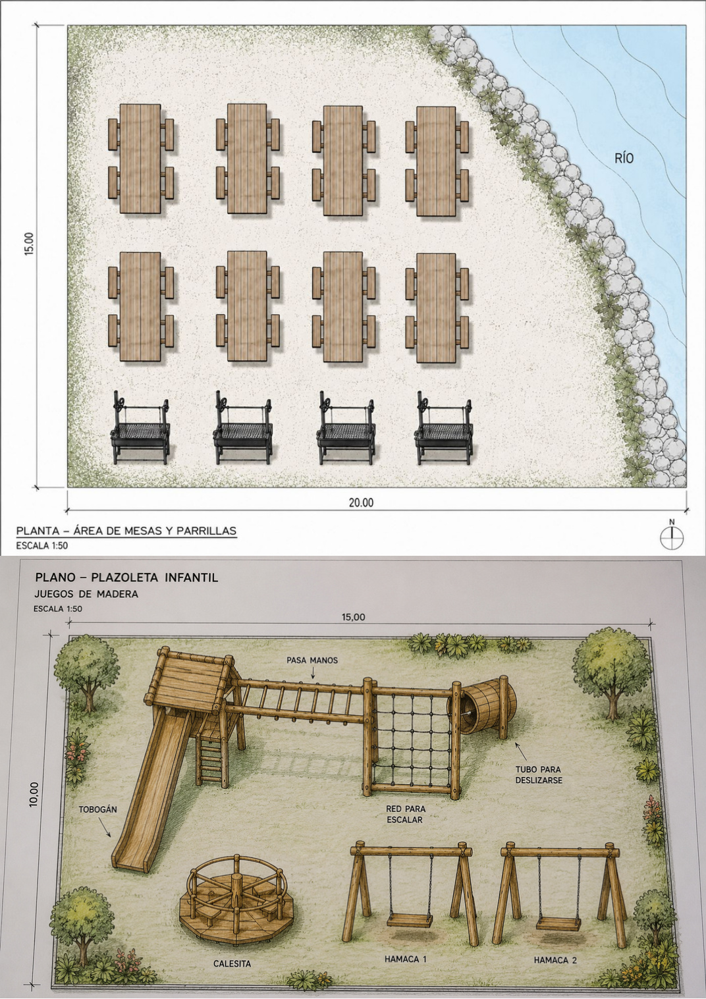
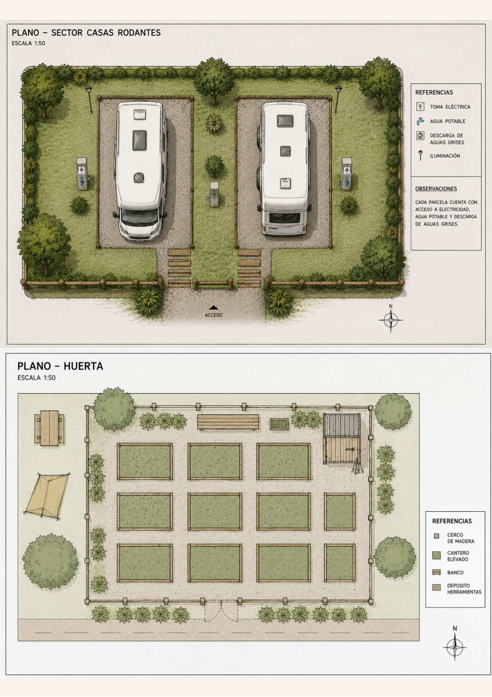
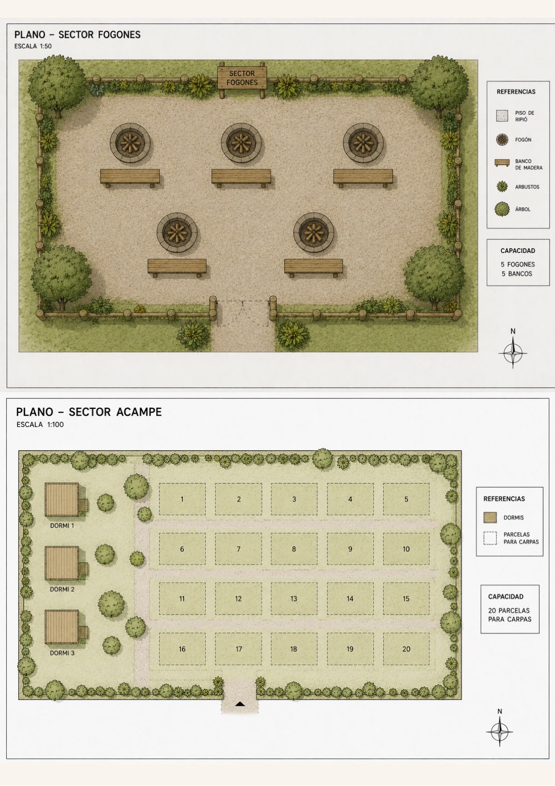
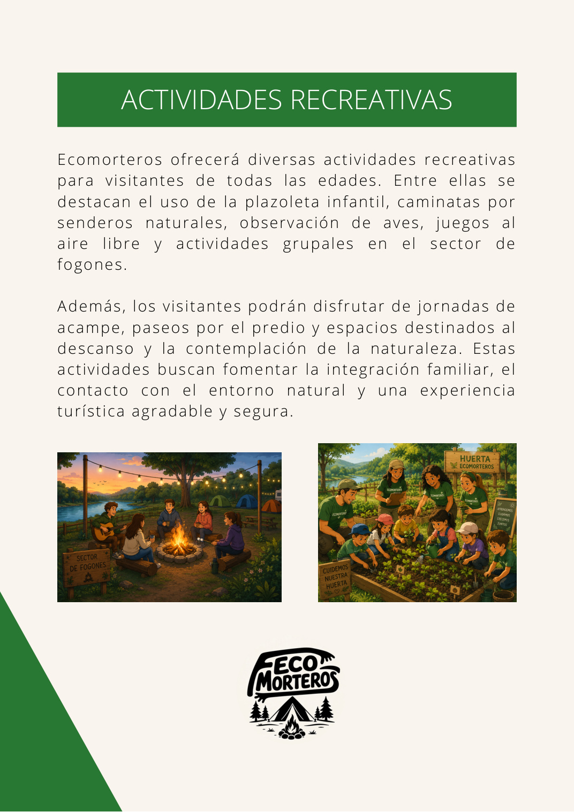
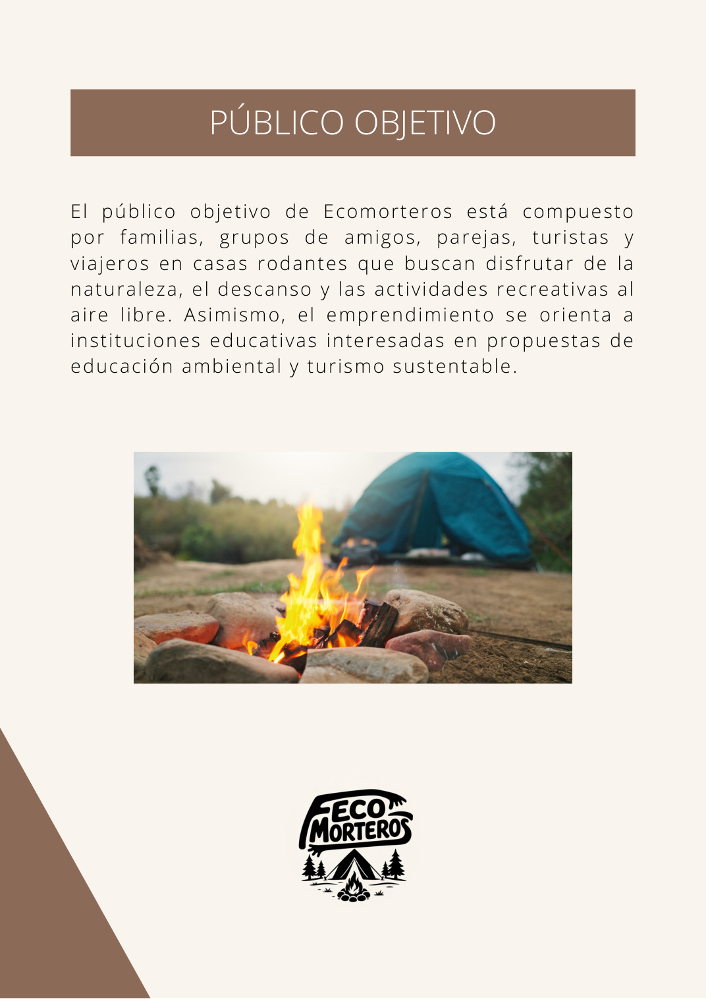

Acampe
20 parcelas, 8 mesas con bancos de madera y 8 parrillas premoldeadas.
Ecomorteros es un camping turístico sustentable pensado para disfrutar de la naturaleza, compartir y descansar en un entorno seguro y confortable.
Ecomorteros está ubicado en Villa Cerro Azul y combina naturaleza, recreación y descanso. El emprendimiento incluye parcelas para acampar, espacios para casas rodantes, dormis para cuatro personas, parrillas, fogones, huerta, proveeduría, baños, duchas y plazoleta recreativa.
Su propuesta busca promover el turismo responsable mediante educación ambiental, participación comunitaria y acciones concretas de cuidado del entorno.
20 parcelas, 8 mesas con bancos de madera y 8 parrillas premoldeadas.
Sector para 2 unidades, con energía eléctrica, agua potable y descarga de aguas grises.
3 dormis de 3 × 4 m, con capacidad para 4 personas cada uno.
Baños de hombres y mujeres, duchas de agua caliente, proveeduría y secretaría.
Plazoleta infantil, juegos de madera, calesita, hamacas y sector de fogones.
10 reflectores, 6 cámaras, matafuegos, botiquines y luces de emergencia.
Los planos incluidos en el proyecto original muestran la organización de los sectores y las distintas propuestas de infraestructura.





Ecomorteros propone una experiencia basada en el cuidado del ambiente, la educación y la participación comunitaria.
Una propuesta que busca contribuir al desarrollo sostenible de Villa Cerro Azul.

Plazoleta infantil, juegos, caminatas, acampe, paseos por el predio y momentos de descanso.

Espacios para compartir en familia o con amigos y disfrutar del entorno natural.
La inversión inicial del proyecto contempla infraestructura general, sanitarios, proveeduría, dormis, plazoleta, fogones, sector para casas rodantes, secretaría, seguridad, identificación y habilitaciones/seguros.
Según el proyecto, en Villa Cerro Azul existe una oferta limitada de alojamientos similares y una demanda insatisfecha de personas interesadas en acampar y viajeros en casas rodantes.
Entorno natural, turismo sustentable, diversidad de servicios, actividades educativas y alianza con la comuna.
Crecimiento del turismo de naturaleza, interés educativo, ampliación de servicios y convenios.
Dependencia de la temporada, capacidad inicial limitada y mantenimiento permanente.
Competencia regional, incendios o sequías, situación económica y aumento de costos.
Proyecto de microemprendimiento turístico sustentable · Villa Cerro Azul.